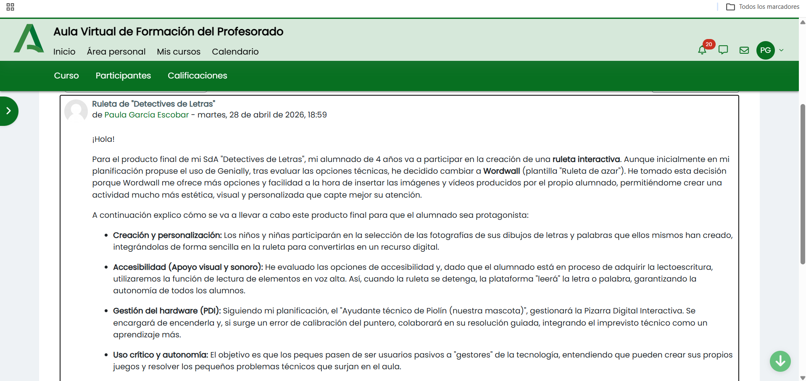

Descripción del producto final
🎯 PRODUCTO FINAL: LA RULETA MÁGICA DE LAS LETRAS (Wordwall)
Como detectives expertos, el final de nuestra misión será fabricar nuestra propia Ruleta Interactiva de Wordwall.
👩🎨 ¿Cómo lo vamos a hacer?
- Personalización: Los niños y niñas elegirán las fotos de sus propias letras de plastilina y dibujos para meterlas en la ruleta. ¡Será un juego con nuestras caras y trabajos!
- Accesibilidad (DUA): Al girar, no sólo veremos la letra, sino que también escucharemos el sonido de la letra o palabra, para que todos podamos jugar sin necesidad de saber leer todavía.
- Ayudantes Técnicos: Aprenderemos a manejar la Pizarra Digital (PDI). Si el puntero falla, el "Ayudante de Piolín" ayudará a arreglarlo.
- Objetivo: Pasar de usar juegos de otros a ser capaces de crear nuestros propios juegos digitales y resolver los pequeños problemas que surjan con la tecnología
